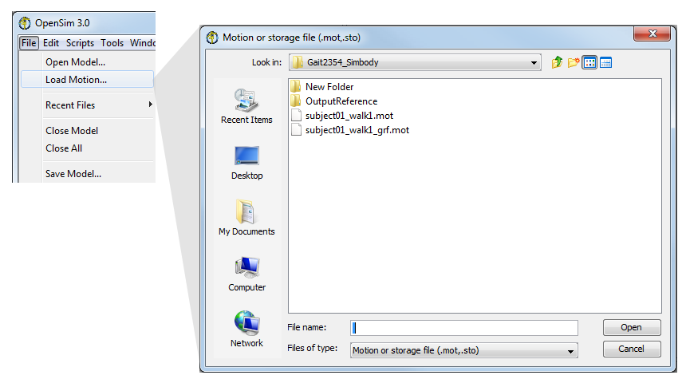
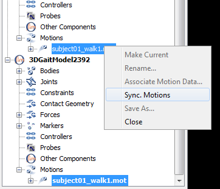
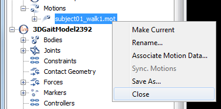

See below for information about
Opening a Motion
To animate a model, load an associated motion file (file type: .mot) into OpenSim. This can be done by drag and drop of the .mot (or .sto) file onto the 3D window of the application, using the File menu as described below, or from the Navigator Window.
OpenSim will try to associate the loaded motion with the current model. If this association could not be done (e.g. because the motion file contains no coordinates from the model as column labels) then an error message is posted and the loading of the motion is aborted. |
|  | Option 1
Option 2 As with models, you can also load motions by dragging a motion file from the Windows Explorer and dropping it into the application, in the 3D view panel.
Option 3 You can also load a motion by Right Clicking on the current model in the Navigator Window and choosing Load Motion... from the drop down menu that appears. |
|---|
 | You can find the motions associated with a model in the Navigator window: A new branch titled the name of the file just loaded will appear in the Navigator titled Motions. Expand the Motions branch by clicking the plus |
|---|
Syncing Motions
|  | If you have multiple models loaded, you can sync their loaded motions (e.g. to compare Inverse Kinematics results with the output of the Residual Reduction Algorithm).
|
|---|
Closing a Motion
To close a motion:
|  |
|
|---|
{kind=link}
{kind=link}
{kind=link}